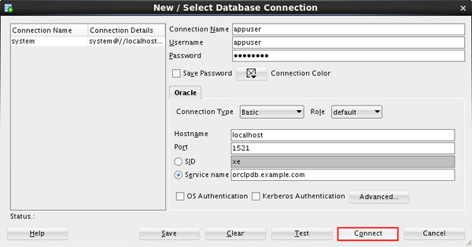
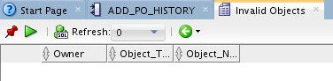

This 15-minute tutorial shows you how to create a new PL/SQL
procedure. And also make a change to the table that is
referenced in the procedure.
Background
As a database administrator (DBA), you may be asked to
revalidate schema objects that have become invalid. Schema
objects (such as triggers, procedures, or views) might be
invalidated when changes are made to objects on which they
depend.
Log in to SQL*Plus as the SYSTEM
user. Alter the session and set container as pdb (orclpdb in
this case).
$ . oraenv
ORACLE_SID = [oracle] ? orcl
The Oracle base has been set to /scratch/u01/app/oracle
$sqlplus systemSQL*Plus: Release 18.0.0.0.0 - Production on Wed Mar 27 03:21:33 2019
Version 18.3.0.0.0
Copyright (c) 1982, 2018, Oracle. All rights reserved.
Enter password: Enter password here
Last Successful login time: Tue Mar 19 2019 03:40:21 -07:00
Connected to:
Oracle Database 18c Enterprise Edition Release 18.0.0.0.0 - Production
Version 18.3.0.0.0SQL*Plus: Release 19.0.0.0.0 - Production on Mon Jul 15 03:01:37 2019
Version 19.3.0.0.0
Copyright (c) 1982, 2019, Oracle. All rights reserved.
Enter password: Enter password here
Last Successful login time: Mon Jul 15 2019 03:01:34 -07:00
Connected to:
Oracle Database 19c Enterprise Edition Release 19.0.0.0.0 - Production
Version 19.3.0.0.0
SQL>
$ SQL> alter session set container=orclpdb;
Session altered.
SQL>
Execute the cr_add_po.sql
script to create a new PL/SQL procedure named APPUSER.ADD_PO_HISTORY.
Exit from SQL*Plus.
SQL> set echo on
SQL> @/home/oracle/2daydba/cr_add_po
SQL> --------------------------------------------------------
--------------------------------------------------------
SQL> -- File created - Monday-July-09-2012
SQL> --------------------------------------------------------
SQL> --------------------------------------------------------
SQL> -- DDL for Procedure ADD_PO_HISTORY
SQL> --------------------------------------------------------
SQL> set define off;
SQL>
SQL> CREATE OR REPLACE PROCEDURE "APPUSER"."ADD_PO_HISTORY"
2 ( p_po_number purchase_orders.po_number%type
3 , p_po_description purchase_orders.po_description%type
4 , p_po_date purchase_orders.po_date%type
5 , p_po_vendor purchase_orders.po_vendor%type
6 , p_po_date_received purchase_orders.po_date_received%type
7 )
8 IS
9 BEGIN
10 INSERT INTO purchase_orders (po_number, po_description, po_date,
11 po_vendor, po_date_received)
12 VALUES(p_po_number, p_po_description, p_po_date,
p_po_vendor, p_po_date_received);
13
14 END add_po_history;
15
16 /
Procedure created.
SQL>
Return to SQL Developer. Expand Procedures for the APPUSER
user. Select your new ADD_PO_HISTORY
procedure to view it in SQL Developer.
Description of the illustration a4
Expand Tables for the
APPUSER user. Right-click the
PURCHASE_ORDERS table and select Edit.
Enter appuser in
the Connection Name and Username field. Enter the password for
appuser. Select the Service name radio button and enter orclpdb.us.oracle.com in
the Service name field. Click Connect.

Description of the
illustration a9
In the Select Connection window, verify that the Connection
is set to appuser and
click OK.
The Compile window appears. Click Apply.
You will receive a success message. Click OK.
Close the Invalid Objects tab. Select Invalid Objects again
in the Reports pane. Connect as the APPUSER
and reapply Bind Values. Because you recompiled ADD_PO_HISTORY,
there are no longer any invalid objects.
 Description of the illustration a15
 Manage
Program Code Stored in the Database
Manage
Program Code Stored in the Database Before You Begin
Before You Begin Validate
Invalid
Schema Objects
Validate
Invalid
Schema Objects